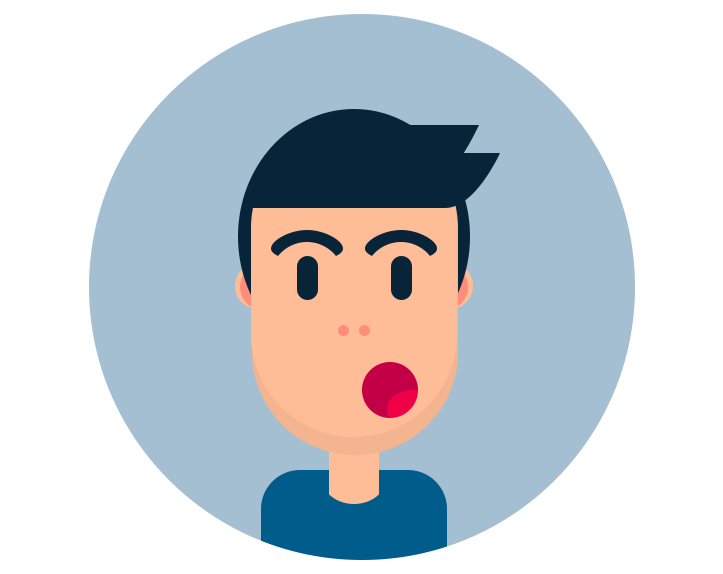

What should I do if I score on average in the UCAT? What is an average UCAT score? Where should I
apply if my UCAT score is average? What universities accept average UCAT score?

What Is An Average UCAT Score?
As we have discussed in many posts before on our blog, the average UCAT score could be
anywhere between 605-650. Indeed, this varies annually in terms of the overall cohort
average and the university’s that you’re applying for average. Therefore, we would like to
reaffirm that this article/blog is only guidance. We strongly recommend that you conduct
your own research regarding your university options, UCAT or any other matters.
Moreover, you can start your research by having a look at
our
guides.

Where To Apply With An Average UCAT Score?
Having an average UCAT score means that in order to maximise your chances of getting into
medical school, you need to look out for universities that use the UCAT but not religiously.
I.e. universities that use the UCAT as one aspect of many others.
Some case examples are
given below. These examples are true for the 2020 application cycle. If a university you are
thinking of is not named below then be sure to check out the university’s website.

University Of East Anglia
Here there is no cut-off score. However, applicants will be ranked from
highest to lowest
scoring applicants. The higher your score the more likely you are to be invited for an
interview. In theory, this could mean that even if you score really low in the UCAT
you can
still be invited for an interview/made an offer at UEA.
Whilst this may sound right, the university’s past experience of admitting students suggests
that applicants need to be at least in the 3rd decile in order for their application
to go
forward. The third decile means an average of about 600 per section. As you can
see this is
just below last year’s average.
The higher the average UCAT score is the more likely the application to be taken to the next
stage.
Leicester University
Here, the UCAT makes up half the importance of the selection process, literally. The UCAT
score is given 32 points, your academic performance is also given 32 points. Overall, the
‘points’ system adds up to 64 points.
For A-level students with predicted grades, their top 8 GCSE results will be used. Each
grade will be given a score. Scores will then be added up out of 32. The highest point for a
single grade is 4 points for an A* so that if your top GCSEs are 8 A* you simply score 32.
Please note that if you have your actual A-level grades the points system is
slightly
different. Check out the university’s
website to find out more about it.
The way the UCAT points are calculated is a little bsit more complicated. You get 32 points
if you score an overall 3200 or above. After that for each 50 UCAT point you lose, your
score goes down by 0.5 points. For example, if you score 3100, you will receive 31
points.
Unlike UAE, Leicester University has a cut-off score. For 2019 applicants, the cut-off score
was 54.5 points. It is important to mention that if you score a band 4 in the
situational
judgement section your application will not progress to the
next level.
As you can see, for a university like Leicester, whether you score 32 on the academic aspect
of the applicants’ ranking, or if you don’t, the higher your UCAT score is, the more
likely
your application will progress.

Conclusion
In this article we have briefly discussed the way certain universities use UCAT scores
which
makes them suitable targets if your UCAT score is considered to be “average”. You can always
check out the university’s website for more information and help or to find out more about
how they use the UCAT. Then you can tailor your application to universities that suit your
score best.
To kickstart your research into getting into medical school be sure to check out our
guides.